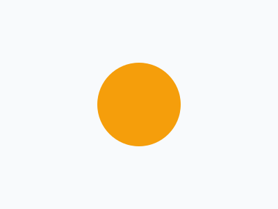
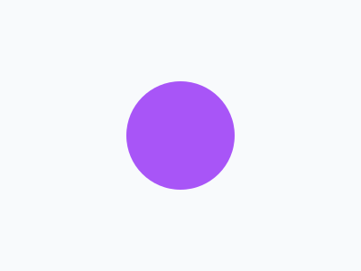

Zoom out Shrinks away.Spin Turns round, forever.Pulse Grows and shrinks.

Bounce Bounces up and down.Shake Shakes side to side.Float Drifts gently up and down.

Blink On, off, on.Swing Swings from its top, like a hanging sign.
Heartbeat A double beat, then a rest.Jello A wobble that settles, every so often.
Flip Turned over like a card, and back.Glow pulse A glow round it that comes and goes.
Shine A highlight sweeps across it.Flipbook A group’s layers shown one at a time: a spinner.
Morph A circle turns into a star, and back.Stagger One Bounce, on each dot in turn: a wave.
Letter by letter Fade in, on each letter in turn.
Typewriter Typed out, and taken back.